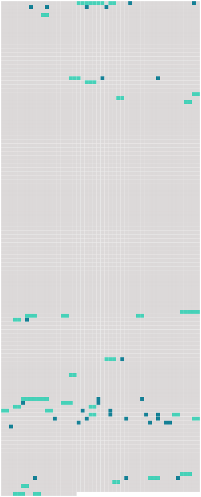

Longueur nb maillons : 61 mentions |
|
Tout d'abord, le prêtre s'était cru seul avec le moribond ; mais bientôt, il aperçut [un jeune homme assis auprès du lit]
[Celui -ci] se leva et [salua] le prêtre : Et, sur un signe affirmatif, [il] continua : « [Je] suis le docteur Desmarais, et cet homme est [mon] patient. [1 phrases] [je] n'ai pu lui sauver la vie. [6 phrases]
Celui -ci fit signe [au médecin] de quitter la chambre, puis il s'assit auprès du malade, lui disant doucement des paroles d'encouragement et de consolation. [40 phrases] Hâtivement, le prêtre prononça les paroles qui pardonnent, puis il ferma les yeux du trépassé et appela [le docteur Desmarais]
La promptitude avec laquelle [il] répondit à l'appel de l'abbé fit supposer à celui -ci qu' [il] ne s'était pas très éloigné, mais le bon prêtre était trop foncièrement honnête pour soupçonner que quelqu'un pût prêter l'oreille aux confidences d'un mourant.
Cependant, [le docteur Desmarais] était un de ces hommes qui tiennent les yeux toujours baissés, et les gens qui ne savent pas regarder en face ont généralement quelque chose à cacher. [8 phrases]
[Le médecin] frappa aussitôt à la porte d'une chambre voisine, et une vieille servante parut. — « Mlle Marcelle a besoin de vos soins, » dit simplement [le médecin] , sans plus s'occuper de la jeune fille. [2 phrases] — « Maintenant, dit le prêtre [au médecin] , une dernière prière pour celui qui vient de rendre son âme à Dieu, et je retourne chez moi. [113 phrases] [Un seul habitant de Némoville] avait accès auprès d'elle : [le docteur Desmarais] On prétendait que Marcelle et [le médecin] étaient fiancés, mais les mieux renseignés disaient que la jeune fille semblait plutôt craindre qu'aimer [le médecin]
Depuis la mort de son père, on eût dit qu'elle subissait l'influence de [ce personnage] , [qui] n'était guère sympathique ; quelqu'un avait même insinué que la fille de M. Richard éprouvait un sentiment plus doux pour le gouverneur, parce que, certains jours, elle avait rougi de plaisir en l'apercevant. [20 phrases]
On manda [le docteur Desmarais] , [qui] donna des soins efficaces à la jeune fille — car c'était une jeune fille, et elle était fort belle. [3 phrases]
L'étrangère fut déposée sur un lit et abandonnée aux soins de la vieille servante, tandis que Marcelle retournait dans le salon, où Roger attendait le verdict [du médecin] pour prendre congé. [10 phrases] — « Vos reproches me font bien mal, disait la voix douce et chantante de l'étrangère, mais tout en éprouvant une grande reconnaissance pour [celui qui m'a sauvé la vie] , je ne puis me défendre d'un réel malaise, lorsqu' [il] me regarde ou m'adresse la parole. Je ne [le] hais pas, ainsi que vous le dites, ce serait une ingratitude dont je suis incapable, mais [il] me fait peur, réellement peur.
» … mais [il] est parfait de bonté pour vous.
»
Pour se mentir à elle -même, Marcelle se disait que [le médecin] lui avait vraiment sauvé la vie, puisqu'elle n'avait que le souffle, quand le gouverneur la lui avait confiée.
La veille, [le médecin] avait passé quelque temps avec les jeunes filles et [s'était] surtout montré aimable pour Gaétane, et [il] l'avait un peu surprise en [lui] demandant au cours de la conversation :
»
»
» Ils parlèrent longuement ensemble, et [le médecin] dit en quittant la jeune fille : « N'oubliez pas que tout dépend de vous, Marcelle ; [je] vous promets qu'avant trois mois, vous serez la femme du gouverneur, si vous suivez [mes] conseils ; et [moi] [j'] épouserai la fille du capitaine Laurent. En servant [mes] intérêts vous servez aussi les vôtres. [30 phrases]
D'un autre côté, ce n'était plus un secret dans Némoville que [le docteur Desmarais] était très assidu auprès de la belle étrangère ; on [le] voyait souvent se diriger vers la demeure de Marcelle, mais on savait que ce n'était plus à Mlle Richard qu' [il] pensait. Un jour que [le docteur Desmarais] était avec Gaétane, [il] se jeta à ses genoux, en lui faisant une déclaration d'amour si inattendue qu'elle demeura interdite.
Comme elle faisait un mouvement pour se lever et se soustraire aux protestations [du médecin] , la porte du salon s'ouvrit et Marcelle entra accompagné de Roger, qui resta interdit devant le groupe romanesque que présentait Gaétane et [le médecin] [3 phrases] Quant à Marcelle, elle paraissait de plus en plus sous la domination [du docteur Desmarais] ; et [celui -ci] semblait plus actif et plus sournois que jamais. |
 |
Il est possible de télécharger la ressource sur la page Ortolang |
Si vous avez des questions ou vous voyez des erreurs, merci d'envoyer un mail à silvia.federzoni89@gmail.com |